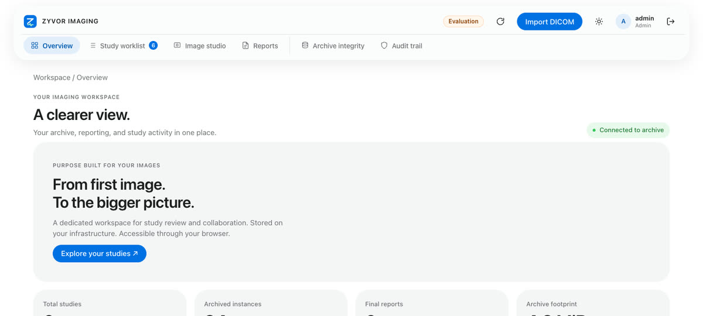
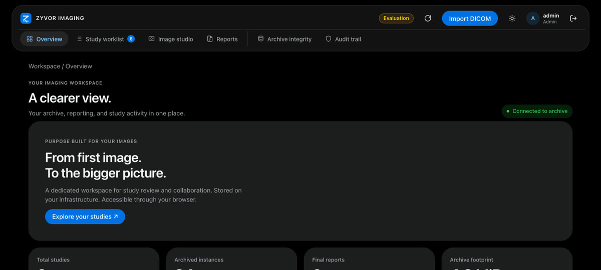

Zyvor AI Labs · Medical imaging
Every study.
In focus.
Archive, review and report on your infrastructure. A research viewer built for evaluation — with DICOM, DICOMweb and a scanner gateway you control.
- Engineering release
- Self-hosted
- Synthetic data only
- Not for diagnostic use


Screenshots are from the running app with synthetic data.
Built for imaging workflows
One workspace from ingest to report.
Technologists
Ingest from scanners over DIMSE or DICOMweb STOW. Calling-AE allowlists and TLS where you need them.
Radiologists
Worklist, research viewer and reporting with drafts, finalisation and amendments — not a diagnostic workstation claim.
Operators
Compose for a laptop, Helm for a cluster, or a k3s edge with HTTPS and organisation sign-in.
See it
Real screens, synthetic studies.
Captured from the running application. Every name and number shown is synthetic.

Capabilities
What ships in the engineering release.


DICOM archive
Byte-for-byte storage, UID hierarchy checks, duplicate handling and integrity scans on your volume or bucket.
DICOMweb
STOW, QIDO, WADO, metadata, bulk data, frames and rendered PNG — for tools that speak the web APIs.
Scanner gateway
C-ECHO, C-STORE, Study Root C-FIND and C-MOVE with calling-AE allowlist; TLS for non-loopback listeners.
Identity
Named roles, optional TOTP, and OIDC authorization code with PKCE. Organisation sign-in on the k3s edge.
Security posture
Controls you can point at.
Sessions hashed. Mutations origin-checked. Audit recorded. OIDC uses PKCE. See the private product docs for depth.
Browser sessions
HttpOnly cookies, Secure when TLS terminates at the edge, SameSite, and hashed session identifiers on the server.
OIDC
Authorization code with PKCE S256, state, nonce and verified RS256 claims. MFA claim requirement is configurable.
Objects
Immutable write path with checksum verification on read. Portable backup tooling for local and shared backends.
Deploy
Run it where your studies live.


Compose
One container for a laptop evaluation. Bootstrap private credentials; never commit them.
Helm
Local SQLite/PVC profile or shared PostgreSQL + S3. NetworkPolicy profiles included.
k3s edge
Image import, Helm apply, optional Envoy Gateway + Keycloak for HTTPS organisation sign-in.
Honest limits
What this is — and is not.
Research viewer
Not validated for diagnostic decisions. No MPR/3D diagnostic workstation claim.
Synthetic data
Built and tested with synthetic data only. Do not load real patient studies into a public evaluation.
Not certified
No clinical validation or regulatory certification claim (HIPAA, MDR, FDA, etc.).
FAQ
Straight answers.
Is this for diagnosis?
No. The browser viewer is a research viewer for evaluation. It is not a certified diagnostic workstation.
Where does the software live?
The product repository is private. This site is the public marketing surface — screenshots, claims and contact only.
How do we evaluate?
Ask about an evaluation. We can arrange a controlled demo with synthetic data on infrastructure you approve.
Who do we contact?
sales@zyvor.dev for evaluations · security@zyvor.dev for security.
Next step
See it with your team.
Evaluations use synthetic data on infrastructure you approve.